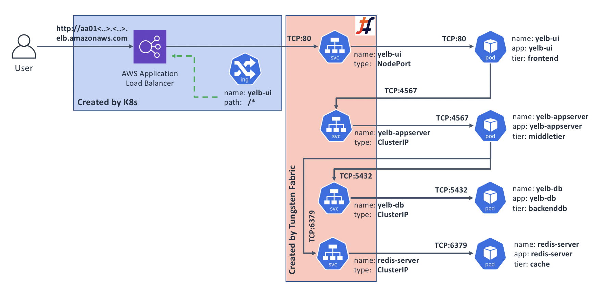

Use case 2: Advanced external app connectivity through Kubernetes' Ingress
Kubernetes documentation page on Ingress describes it as:
"An API object that manages external access to the services in a cluster, typically HTTP.
Ingress can provide load balancing, SSL termination and name-based virtual hosting."
Ingress functionality is not provided by CNI. This means that a Kubernetes cluster operator would typically have to install, and then manage and support a separate Ingress controller solution for their cluster.
For Kubernetes deployments on premises and in public clouds where Kubernetes doesn't have built-in Ingress support, Tungsten Fabric comes bundled with its own Ingress controller. It uses HAProxy under the covers and implements all basic functionality as described in Kubernetes Ingress documentation page.
When running on AWS, Kubernetes can be configured to use AWS's Application Load Balancer (ALB) for its Ingress services. Kubernetes in this sandbox is set up this way, to most closely reflect a typical real life deployment scenario.
The following diagram outlines the resulting deployment architecture for our example application:

When would I care?
Ingress controller option is only compatible with applications that use HTTP or HTTPS. If that's the case for your application, then you may want to consider Ingress to help you with the following:
- You'd like to secure your application with HTTPS by exposing it through Ingress configured to perform SSL offload; and/or
- You'd like to direct incoming requests to different Kubernetes Services based on HTTP path in requests, e.g.,
/blog/could go toService A, while/account/could go toService B, etc.; and/or - Your application serves multiple DNS domains through Name-based Virtual Hosting, e.g., requests with the
Host:header set totest.project.comneed to go toService C, while ones withprod.project.comneed to go toService D.
Exposing our sample app through Ingress
Before we explore the three scenarios above, let's deploy our sample application with a simple Ingress similar to how we did it with Service type LoadBalancer, and then build on that.
Make sure you're on the sandbox control node, logged in as root, and in the correct directory:
# Make sure we're root
whoami | grep root || sudo -s
# Change to the manifests directory
cd /home/centos/yelb/deployments/platformdeployment/Kubernetes/yaml
# Deploy our sample application with Ingress
kubectl create -f cnawebapp-ingress-alb.yaml
After a couple of minutes, deployment process should complete and we should be able to access our sample application from the Internet. Let's find the DNS name for our Ingress:
# kubectl get ing yelb-ui
NAME HOSTS ADDRESS PORTS AGE
yelb-ui * 539db10e-default-yelbui-3c9c-1330819777.us-west-1.elb.amazonaws.com 80 60m
According to the output above, our sample app is now available from the Internet on http://539db10e-default-yelbui-3c9c-1330819777.us-west-1.elb.amazonaws.com
Try accessing Yelb through the DNS name you've got when you ran the command above in your environment, to make sure it works.
Securing our sample app with HTTPS
For this exercise, we'll need to generate and add a self-signed certificate to the AWS Certificate Manager. AWS Application Load Balancer (ALB) that serves the Ingress function needs this to perform the encryption.
Note: for production use, you will likely need to get a "proper" certificate for a fully registered domain name, probably through the respective function of the AWS Certificate Manager. Since we're just doing an exercise, we'll go with a self-signed one and a made-up domain.
Step 1: Generate a self-signed certificate and add it to AWS Certificate Manager
The steps below should be executed on a host where you have installed AWS CLI tool with Access and Secret keys that allow you to make changes to Certificate Manager.
# Generate self-signed certificate for a fake domain ‘yelb.mydomain.com':
openssl req -x509 -nodes -days 365 -newkey rsa:2048 -keyout tls.key -out tls.crt -subj "/CN=yelb.mydomain.com"
# Add our new certificate to the AWS Certificate Manager
# Pay attention to the "--region" - it must be the same AWS region
# where you're running Tungsten sandbox; in our example it is "us-west-1"
aws acm import-certificate --certificate file://tls.crt --private-key file://tls.key --region us-west-1
If all went well, the last command will display something similar to the following:
{
"CertificateArn": "arn:aws:acm:us-west-1:180612498884:certificate/e7341ff5-52ef-4a7b-94b5-05643ef6ab46"
}
We will need the value that follows the CertificateArn for our next step.
Step 2: Create our Ingress definition
Make sure you're on the sandbox control node, logged in as root, and in the correct directory:
# Make sure we're root
whoami | grep root || sudo -s
# Change to the manifests directory
cd /home/centos/yelb/deployments/platformdeployment/Kubernetes/yaml
Now, let's create a new Ingress definition:
cat > ingress-https.yaml <<EOF
apiVersion: extensions/v1beta1
kind: Ingress
metadata:
name: "yelb-ui-https"
annotations:
kubernetes.io/ingress.class: alb
alb.ingress.kubernetes.io/scheme: internet-facing
alb.ingress.kubernetes.io/listen-ports: '[{"HTTPS":443}]'
alb.ingress.kubernetes.io/certificate-arn: INSERT_CERT_ARN_HERE
labels:
app: "yelb-ui"
spec:
rules:
- host: yelb.mydomain.com
http:
paths:
- path: /*
backend:
serviceName: "yelb-ui"
servicePort: 80
EOF
Next, let's put the CertificateArn in. Edit the command before running it, and replace the arn:aws:acm:us-west-1:180612498884:certificate/e7341ff5-52ef-4a7b-94b5-05643ef6ab46 with the value for CertificateArn that you got when you executed the Step 1 above.
sed -i "s#INSERT_CERT_ARN_HERE#arn:aws:acm:us-west-1:180612498884:certificate/e7341ff5-52ef-4a7b-94b5-05643ef6ab46#" ingress-https.yaml
If the command ran successfully, your ingress-https.yaml file will have the ARN of your self-signed certificate instead of the string INSERT_CERT_ARN_HERE.
Step 3: Create the HTTPS Ingress and test it
# Create a new Ingress
kubectl create -f ingress-https.yaml
After running the command above, wait for a couple minutes for the new ALB Ingress to come up. Then, let's find what DNS name has been assigned to it, and try connecting to it:
# kubectl get ingress yelb-ui-https
NAME HOSTS ADDRESS PORTS AGE
yelb-ui-https yelb.mydomain.com 539db10e-default-yelbuihtt-2a0d-1983111448.us-west-1.elb.amazonaws.com 80 16m
From the output above, we can see the ADDRESS of the new Ingress; let's see if it worked:
# curl -v -k https://539db10e-default-yelbuihtt-2a0d-1983111448.us-west-1.elb.amazonaws.com -H "Host: yelb.mydomain.com"
[..skip..]
* SSL connection using TLS_ECDHE_RSA_WITH_AES_128_GCM_SHA256
* Server certificate:
* subject: CN=yelb.mydomain.com
[..skip..]
<html>
<head>
<script src="env.js"></script>
<meta charset="utf-8">
<title>Yelb</title>
<base href="/">
<meta name="viewport" content="width=device-width, initial-scale=1">
<link rel="icon" type="image/x-icon" href="favicon.ico?v=2">
</head>
<body>
<yelb>Loading...</yelb>
[..skip..]
It worked - we can access the Yelb application over an encrypted connection!
Our new topology looks something like this (note that we still have our original HTTP Ingress that isn't shown on this diagram):

Summary: why would I want this?
There are a few benefits to implementing HTTPS Ingress, in addition to added end-user's connection security, privacy, and data integrity:
- Your application consumes less compute resources, since the encryption overheads are transferred to the ALB;
- Your application now supports HTTP/2, which is a good thing;
- You can also easily implement automatic redirect of HTTP to HTTPS.
Cleanup
Let's delete the HTTPS Ingress that we've added as we don't need it for the rest of this chapter:
kubectl delete -f ingress-https.yaml
Then, from the computer where you performed the Step 1 (generate and install self-signed certificate into the AWS Certificate Manager), run the following command to delete that certificate, making sure you use your own value of the CertificateArn:
aws acm delete-certificate --certificate-arn arn:aws:acm:us-west-1:180612498884:certificate/e7341ff5-52ef-4a7b-94b5-05643ef6ab46
Directing requests based on URL path
In some cases you may want to run more than one application off the same DNS domain name; for example www.corp.com may support your main application, while some other application like WordPress could be handling www.corp.com/blog.
For this exercise, we are assuming that you have a copy of Yelb running per instructions at the start of this chapter in "Exposing our sample app through Ingress". If you're starting fresh, jump up to that part, follow the instructions to deploy, and come back.
To demonstrate the routing by the URL Path, we will add another Deployment to our environment, and update the configuration of our Ingress accordingly. With this new configuration our Ingress will direct requests for the / path to our main app yelb, while requests for the /echo path will go to the new app, EchoServer.
Here's a diagram of our target state:

We should already have the Yelb part in place, so let's add the EchoServer:
# Create the EchoServer Deployment and Service manifest:
cat > echoserver.yaml << EOF
apiVersion: extensions/v1beta1
kind: Deployment
metadata:
name: echoserver
spec:
replicas: 1
template:
metadata:
labels:
app: echoserver
spec:
containers:
- image: gcr.io/google_containers/echoserver:1.4
name: echoserver
ports:
- containerPort: 8080
---
apiVersion: v1
kind: Service
metadata:
name: echoserver
spec:
ports:
- port: 80
targetPort: 8080
protocol: TCP
type: NodePort
selector:
app: echoserver
EOF
# And now deploy it:
kubectl create -f echoserver.yaml
Next, we'll create an updated configuration for our Ingress. To do this, we'll copy the Ingress resource from the cnawebapp-ingress-alb.yaml and make two changes in the routing part:
- Update the Path to
yelbfrom/*to/so that it doesn't interfere with theechoserver; and - Add a new
/echoPath leading to theechoserver
Note: the reason we're including the full resource definition instead of just applying the difference is that Ingress objects don't support strategic merge patching.
# Our updated Ingress resource:
cat > ingress-paths.yaml << EOF
apiVersion: extensions/v1beta1
kind: Ingress
metadata:
name: "yelb-ui"
annotations:
kubernetes.io/ingress.class: alb
alb.ingress.kubernetes.io/scheme: internet-facing
labels:
app: "yelb-ui"
spec:
rules:
- http:
paths:
- path: /
backend:
serviceName: "yelb-ui"
servicePort: 80
- path: /echo
backend:
serviceName: "echoserver"
servicePort: 80
EOF
# And now deploy it:
kubectl apply -f ingress-paths.yaml
There will be a warning about the kubectl apply which is safe to ignore in our case since our updated resource is essentially the same save the rules configuration.
Once the updated configuration becomes active in a few seconds, we can check if the URL-based routing works. When we request the base URL / (or empty), we should get to Yelb, and if we request /echo, we should get back output of the EchoServer.
# Get the base URL of our Ingress
baseUrl=$(kubectl get ing yelb-ui | grep amaz | awk '{print $3}')
echo "Our Ingress is at: ${baseUrl}"
# Try to access the $baseUrl ; we should get back our Yelb UI page contents
curl http://${baseUrl}
# Now try /echo ; we should get back the output of the EchoServer
curl http://${baseUrl}/echo
Serving multiple DNS domains
The solution in this scenario is useful when you have multiple domain names and would like to serve different applications from each domain while sharing the same Ingress infrastructure. This helps save costs and in some cases may be less complex than having dedicated Ingress instances per domain name.
This exercise builds on the previous one, Directing requests based on URL path. If you have not completed it, please go up and simply cut and paste the steps that create and deploy the echoserver.yaml manifest. We will build a new one for the Ingress, so no need to create and deploy the ingress-paths.yaml.
Once ready, you should have: a copy of yelb and a copy of echoserver. It doesn't matter what your Ingress configuration is as we're going to overwrite it.
In our target state, Ingress will have two domain names defined, yelb.mydomain.com and echo.mydomain.com, and will route the incoming requests according to the value in the Host: HTTP header, which web browsers insert automatically for the host portion of the URL that you request.
Here's the diagram of our target state:

Let's create and deploy the configuration for our Ingress that will do the required routing:
# Our updated Ingress resource:
cat > ingress-hosts.yaml << EOF
apiVersion: extensions/v1beta1
kind: Ingress
metadata:
name: "yelb-ui"
annotations:
kubernetes.io/ingress.class: alb
alb.ingress.kubernetes.io/scheme: internet-facing
labels:
app: "yelb-ui"
spec:
rules:
- host: yelb.mydomain.com
http:
paths:
- path: /*
backend:
serviceName: "yelb-ui"
servicePort: 80
- host: echo.mydomain.com
http:
paths:
- path: /*
backend:
serviceName: "echoserver"
servicePort: 80
EOF
# And now deploy it:
kubectl apply -f ingress-hosts.yaml
Once the configuration successfully applies, we're ready to test. Since the domain name and hosts are made up, we will ask curl to add a correct Host: header. When it is set to yelb.mydomain.com we should get to Yelb, and when it's set to echo.mydomain.com, we should get back output of the EchoServer.
# Get the base URL of our Ingress
baseUrl=$(kubectl get ing yelb-ui | grep amaz | awk '{print $3}')
echo "Our Ingress is at: ${baseUrl}"
# Access our Ingress with Host: set to yelb; we should get back our Yelb UI page contents
curl http://${baseUrl} -H "Host: yelb.mydomain.com"
# Now try Host: set to echo; we should get back the output of the EchoServer
curl http://${baseUrl} -H "Host: echo.mydomain.com"
Cleanup
Once you've explored enough, feel free to clean things up:
# Delete the "yelb" and "echoserver" applications:
kubectl delete -f cnawebapp-ingress-alb.yaml
kubectl delete -f echoserver.yaml
# Delete the additional manifests we've created:
rm -f echoserver.yaml ingress-paths.yaml ingress-hosts.yaml
Recap and what's next
Kubernetes provides three basic ways of exposing an application to the outside world: Services of type LoadBalancer or NodePort, and Ingress. The first two support any arbitrary protocols, but also don't add much in the sense of protocol intelligence. Ingress, on the other hand, provides protocol-specific functions, but that makes it compatible only with applications that use HTTP or HTTPS.
Similar to other features, Kubernetes requires a controller to implement the actual Ingress functionality - simply creating Ingress resources in Kubernetes API doesn't do anything. Ingress controllers are pieces of software that Kubernetes cluster operators have to install and then monitor, patch, upgrade, etc.. Tungsten Fabric comes bundled with an Ingress controller which should make this process easier.
Once you've determined how your application should be exposed to the Internet, you need to consider how to deal with the questions around network access controls. Read on Use Cases 3 and 4 in this guide where we cover some of these scenarios.